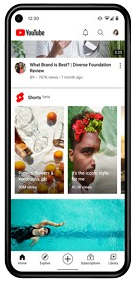
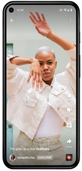
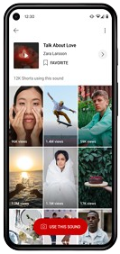

J'utilise souvent Youtube pour différentes choses que ça soit pour me divertir ou même pour apprendre certaines choses car cette appli se révele être très utile pour trouver un tutoriel sur n'importe quel sujet voici quelques exemples plus précis :
Une Abondance de Contenu :
YouTube offre une immense variété de contenus, des vidéos amusantes aux tutoriels pratiques, en passant par des documentaires fascinants. Peu importe vos intérêts, vous trouverez sûrement du contenu captivant sur YouTube.


